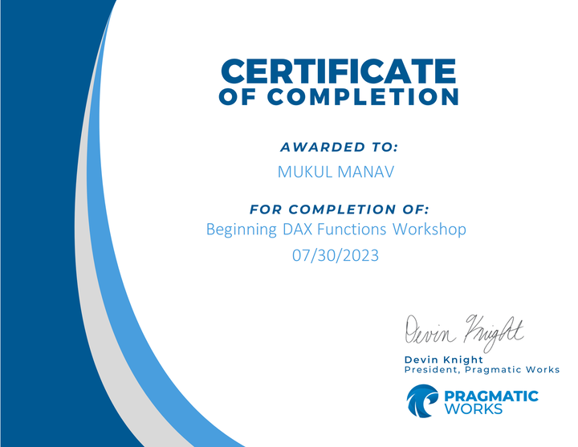

August 18, 2022
Those who earn the Google Data Analytics Professional Certificate
have completed eight courses, developed by Google, that include
hands-on, practice-based assessments and are designed to prepare
them for introductory-level roles in Data Analytics. They are competent
in tools and platforms including spreadsheets, SQL, Tableau, and R.
They know how to prepare, process, analyze, and share data for
thoughtful action..

 1. Data Analysis: Conducted in-depth analysis of user data to identify trends, patterns, and insights related to customer behavior, preferences, and engagement.
2. Data Visualization: Created interactive and visually appealing dashboards in Power BI to present key metrics, KPIs, and performance indicators related to operations, including order volumes, customer demographics, and revenue.
3. Data Cleansing and Transformation: Employed data cleansing techniques in Power Query to clean and preprocess raw data from multiple sources, ensuring data quality and consistency for accurate analysis.
4. Data Modeling: Developed data models in Power BI to establish relationships between different datasets, enabling seamless integration and analysis of user data, restaurant data, and order data.
5. Power Query: Utilized Power Query to extract, transform, and load (ETL) data from various sources, including CSV files, databases, and web APIs, into Power BI for analysis and visualization.
6.DAX (Data Analysis Expressions): Implemented DAX calculations and measures in Power BI to perform advanced analytics.
7.Business Intelligence (BI) Tools: Leveraged Power BI as a powerful business intelligence tool to gain actionable insights into performance, make data-driven decisions, and drive business growth.
8. Report Development: Developed comprehensive reports and dashboards in Power BI to provide stakeholders with actionable insights and facilitate data-driven decision-making within organization.
9. Problem Solving: Identified and addressed business challenges and opportunities through data analysis and visualization, providing strategic recommendations to optimize Swiggy's operations and enhance customer satisfaction.
10. Collaboration and Communication: Collaborated with cross-functional teams, including business analysts, stakeholders, and data engineers, to understand requirements, gather feedback, and deliver impactful insights through data visualization.
1. Data Analysis: Conducted in-depth analysis of user data to identify trends, patterns, and insights related to customer behavior, preferences, and engagement.
2. Data Visualization: Created interactive and visually appealing dashboards in Power BI to present key metrics, KPIs, and performance indicators related to operations, including order volumes, customer demographics, and revenue.
3. Data Cleansing and Transformation: Employed data cleansing techniques in Power Query to clean and preprocess raw data from multiple sources, ensuring data quality and consistency for accurate analysis.
4. Data Modeling: Developed data models in Power BI to establish relationships between different datasets, enabling seamless integration and analysis of user data, restaurant data, and order data.
5. Power Query: Utilized Power Query to extract, transform, and load (ETL) data from various sources, including CSV files, databases, and web APIs, into Power BI for analysis and visualization.
6.DAX (Data Analysis Expressions): Implemented DAX calculations and measures in Power BI to perform advanced analytics.
7.Business Intelligence (BI) Tools: Leveraged Power BI as a powerful business intelligence tool to gain actionable insights into performance, make data-driven decisions, and drive business growth.
8. Report Development: Developed comprehensive reports and dashboards in Power BI to provide stakeholders with actionable insights and facilitate data-driven decision-making within organization.
9. Problem Solving: Identified and addressed business challenges and opportunities through data analysis and visualization, providing strategic recommendations to optimize Swiggy's operations and enhance customer satisfaction.
10. Collaboration and Communication: Collaborated with cross-functional teams, including business analysts, stakeholders, and data engineers, to understand requirements, gather feedback, and deliver impactful insights through data visualization.

Project Title: Analyzing Google Play Store Data
Objective: Analyze Google Play Store data to gain insights into app performance, user preferences, and market trends. Provide actionable recommendations to optimize app strategies and enhance user engagement.
Key Components:
Data Collection and Preparation
Data Analysis and Visualization using Power BI
Insights Generation and Recommendations
Tools Used: Power BI, DAX, SQL
Outcome: Detailed insights and actionable recommendations for app developers, marketers, and stakeholders to optimize app strategies and maximize user engagement on the Google Play Store platform..
Project Title: Analyzing Netflix Data using Power BI
Objective: Utilize Power BI to analyze Netflix data and derive insights into content trends, viewer preferences, and market dynamics. Provide actionable recommendations to optimize content strategy and enhance viewer engagement.
Key Components:
Data Collection and Preparation: Collect and clean Netflix dataset, handle missing values, and format data for analysis.
Data Analysis and Visualization: Use Power BI to analyze and visualize content genres, viewer ratings, and popularity trends.
Insights Generation: Identify top-performing genres, analyze viewer ratings and reviews, and understand regional preferences.
Recommendations: Provide actionable recommendations for content creators and stakeholders to optimize content strategy, improve viewer retention, and expand audience reach.
Skills Utilized: Power BI for data visualization and analysis, SQL for data querying and manipulation.
Outcome: Detailed insights and actionable recommendations for content creators and stakeholders to optimize content strategy, improve viewer engagement, and drive success on the Netflix platform.

Donec eget ex magna. Interdum et malesuada fames ac ante ipsum primis in faucibus. Pellentesque venenatis dolor imperdiet dolor mattis sagittis magna etiam.

Establish relationships: Define connections between tables to consolidate related data and enable cross-table analysis.
Structure hierarchies: Organize data into logical hierarchies to facilitate drill-down analysis and enhance data exploration.
Define measures: Create calculated measures to perform aggregations and calculations on the data, providing valuable insights.
Optimize data organization: Structure data efficiently to enable quick retrieval and analysis, ensuring optimal performance.
Enable insightful analysis: By structuring data effectively, Power BI empowers users to uncover relationships, derive insights, and make data-driven decisions.

Calculated columns: Create new columns in tables using DAX formulas to derive additional insights from existing data.
Measures: Define calculations, aggregations, and metrics using DAX to analyze data dynamically in visualizations.
Filter context: Utilize DAX to apply filters on data dynamically based on user interactions and selections in Power BI.
Row context: Leverage DAX to perform row-level calculations and apply calculations at the individual row level within a table.
Time intelligence: Utilize DAX functions to perform time-based calculations, such as year-to-date, month-over-month, and rolling averages, for analyzing trends and patterns over time..

Description
Embark on a transformative journey into AI with Mike Wheeler, your guide in this Udemy Best Seller course on ChatGPT and Prompt Engineering. As an experience instructor who has taught well over 300,000 students, Mike unveils the secrets of developing your own custom GPTs, ensuring your skills shine in the thriving digital marketplace. This course will get your familiar with Generative AI and the effective use of ChatGPT and is perfect for the beginner. You will also learn advanced prompting techniques to take your Prompt Engineering skills to the next level!
This course is broken into the following sections, one section building upon the next:
Introduction to ChatGPT
Using ChatGPT for Communication
Using ChatGPT for Career Advancement
Using ChatGPT for Basic Coding
ChatGPT Prompt Engineering and Design
Engineering Prompts for Learning with Focus Prompts
Shots and CoTs - Types of Prompts Introduction
ChatGPT for Technology
Cracking the Code - Intermediate Development with ChatGPT
Using ChatGPT for Data Management and Visualization
Advanced ChatGPT Development Techniques
Extending ChatGPT and Updates
My GPTs and the ChatGPT Store - Custom GPTs
The curriculum keeps pace with the rapid advancements of ChatGPT and is updated often. This provides you with the most up-to-date knowledge and practical ChatGPT skills. Whether your goal is career advancement, business growth, or simply a passion for AI, Mike’s hands-on approach will empower you to leverage ChatGPT to its fullest potential.
From initiating your free ChatGPT account to delving into the nuances of OpenAI's ChatGPT Plus, enjoy tailored insights to help you navigate and excel in the world of AI.
Newly updated to cover custom GPT creation using ChatGPT's GPT Builder, along with publishing to the GPT Store..

Basic Functions: Learn fundamental functions such as SUM, AVERAGE, and IF to perform basic calculations and manipulate data in Excel spreadsheets.
Data Formatting: Master basic formatting techniques including cell formatting, font styles, and cell alignment to improve the appearance and readability of spreadsheets.
Charts and Graphs: Explore basic chart types like bar charts, line graphs, and pie charts to visually represent data and communicate insights effectively.
PivotTables: Develop proficiency in creating PivotTables to analyze large datasets, summarize data, and generate dynamic reports with interactive filtering and grouping capabilities.
Advanced Formulas: Advance to using complex formulas and functions such as XLOOKUP, VLOOKUP, and array formulas to perform sophisticated calculations, lookup operations, and data analysis tasks in Excel..